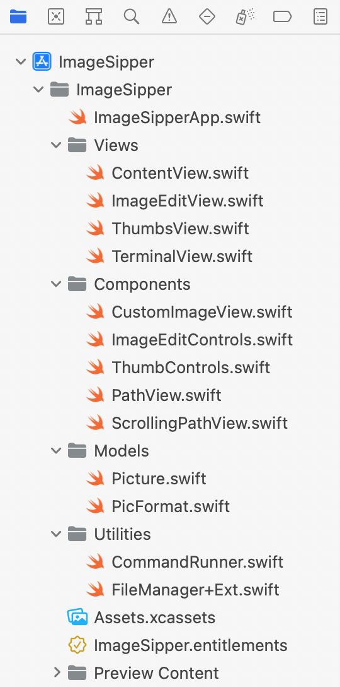
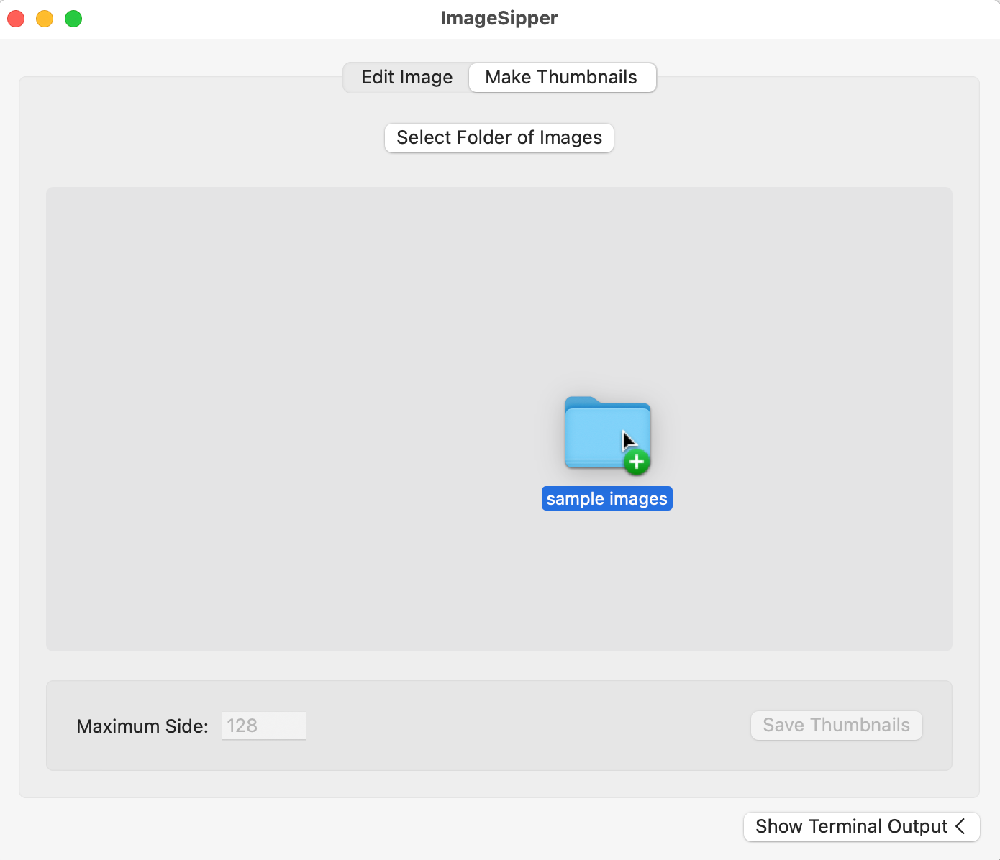
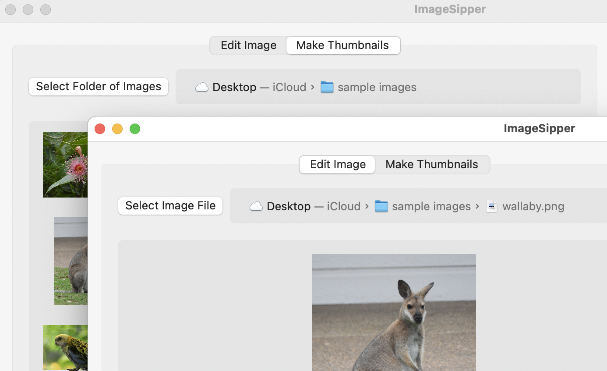
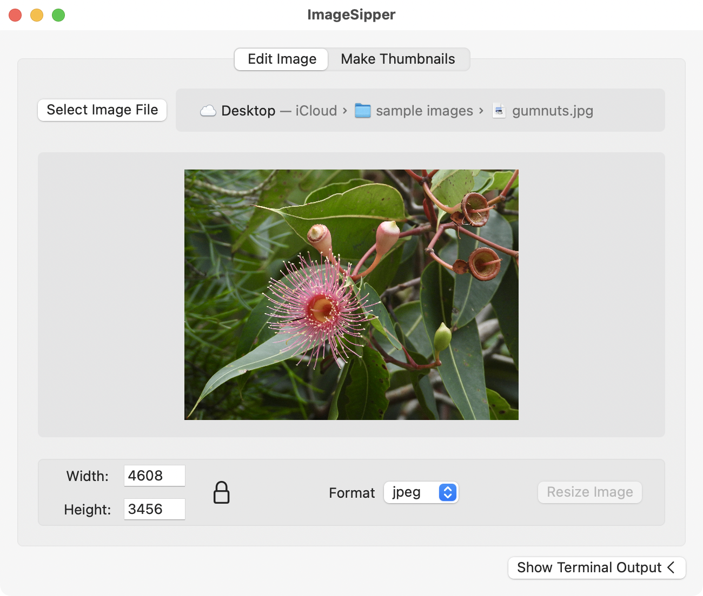
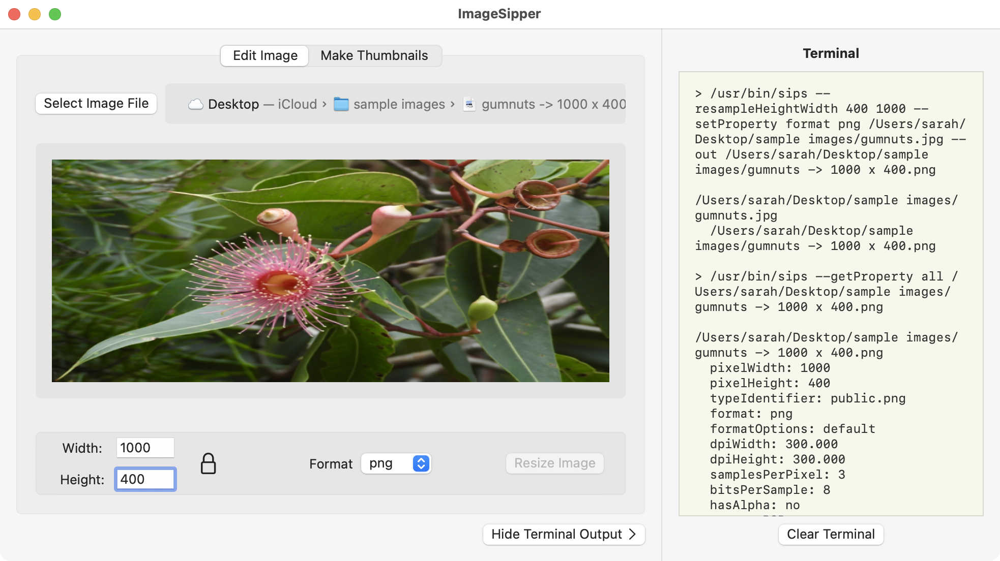
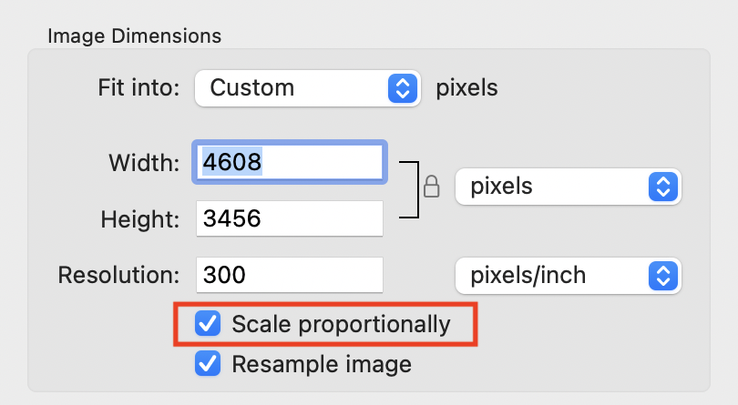
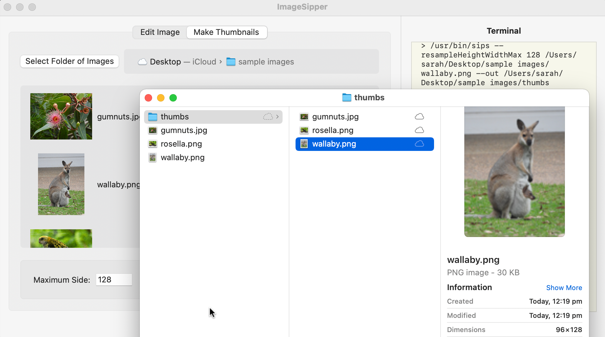

13 Adding the Interface¶
In the previous chapter, you learned about Terminal commands, how to run them in Terminal and how to run them using Swift. Now, you’re going to take your knowledge and apply it to an app that provides a graphical user interface to some features of the sipscommand.
Since you’re now an experienced macOS app developer, you don’t need to start from scratch. The starter project has all the UI, but you have to make it work.
In this chapter, you’ll add multiple options for selecting files and folders, and you’ll apply the general functions you created in the last chapter to more specific commands.
You’ll work on an app called ImageSipper that’ll give you controls for editing single images, as well as the ability to generate thumbnails for a complete folder of image files.
The Starter Project¶
Go to the folder for this chapter in the downloaded materials and open the starterproject. Build and run to see what you’re working with:

The app window has a tab view with two tabs, each offering a different image editing feature. There’s a terminal output view at the side, so you can see what Terminal commands the app uses and what it gets back.
Most of the controls are inactive, and since there’s no way to select an image file yet, you can’t do much.
Head back to Xcode and look at the groups and files in the Project navigator:

Going through the groups in this list:
- Views:
ContentViewis the main window view, containing aTabViewand theTerminalView. TheTabViewcontainsImageEditViewandThumbsView. - Components: These are subviews used by the main views.
CustomImageViewformats anImageview. The twoControlsviews provide the input fields and buttons at the bottom of each of the views in theTabView. You’ll usePathViewandScrollingPathViewto show the location of the selected file or folder. - Models:
Pictureis a structure to hold the image data that you read usingsips.PicFormatis an enumeration listing the supported image formats. - Utilities:
CommandRunneris a class wrapped round the functions you wrote in the playground, along with a method for publishing the output.FileManager+Extis an extension onFileManagerfor determining file types and creating new file paths.
Separating components and utilities like this makes them more reusable in other projects.
Since now you have the app running, it’s time to make it functional.
Choosing Files and Folders¶
The first step before you can edit any images is to allow your users to select an image file or a folder of images.
In Chapter 11, “Adding Menu Controls”, you used NSSavePanel to allow the user to choose where to save a file. This time, you want the user to select an existing file, so you’ll use NSOpenPanel. These both inherit from NSPanel, so they share some properties.
Open ImageEditView.swift. Find the empty method called selectImageFile(), and put this code inside it:
// 1
let openPanel = NSOpenPanel()
openPanel.message = "Select an image file:"
// 2
openPanel.canChooseDirectories = false
openPanel.allowsMultipleSelection = false
openPanel.allowedContentTypes = [.image]
// 3
openPanel.begin { response in
if response == .OK {
// 4
imageURL = openPanel.url
}
}
So what does the method do now?
- Create a new
NSOpenPaneland give it a header. - Configure the panel so the user can only choose a single image file.
- Show the panel and wait for the user to close it.
- If the response is
OK, setimageURLto the selected url.
Build and run the app, click Select Image File and choose any image. Because CustomImageView already uses imageURL, your image appears:

Notice how the panel won’t let you select a folder, any non-image file type or multiple files.
Selecting Folders¶
While you’re setting up panels, open ThumbsView.swift and fill selectImagesFolder()with:
let openPanel = NSOpenPanel()
openPanel.message = "Select a folder of images:"
// 1
openPanel.canChooseDirectories = true
openPanel.canChooseFiles = false
openPanel.allowsMultipleSelection = false
openPanel.begin { response in
if response == .OK {
// 2
folderURL = openPanel.url
}
}
What’s different in this version?
- The configuration only allows you to choose a single folder.
- When the user selects a folder, you set the property that
ThumbsViewuses to populate a list of image names and thumbnails.
Build and run, switch to the Make Thumbnails tab, click Select Folder of Images and try it out:

ThumbsView uses AsyncImage for the images, so the app remains responsive while they load.
Now you have a way to provide the image or folder to each view, but isn’t there an easier way?
Dragging and Dropping¶
How about allowing users to drag and drop image files or folders into the views? SwiftUI makes detecting drops easy, but working out the URLs from the dropped data is a bit obscure.
Start by opening CustomImageView.swift and adding this new method to CustomImageView:
// 1
func loadURL(from data: Data?) {
// 2
guard
let data = data,
let filePath = String(data: data, encoding: .utf8),
let url = URL(string: filePath) else {
return
}
// 3
imageURL = url
}
Stepping through this:
- The
onDropmodifier will call this method whenever it detects a drop and pass in an optionalDataparameter. - If there is any
Data, try converting it to aStringand using thatStringto create aURL. - If that works, you get a URL that you can use to set the
imageURLproperty. This is a@Bindingproperty, so its new value flows back toImageEditView.
Note
You can’t use URL(fileURLWithPath: filePath) here. You must use URL(string: filePath), or you get some strange file ID that won’t load.
You’re nearly ready to add an onDrop modifier to CustomImageView, but first, you need a Boolean property to hold the state of the drag and drop operation.
Add this to the top of CustomImageView:
@State private var dragOver = false
This is set to true whenever the drag enters the target and to false whenever the drag leaves.
Handling the Drop¶
Finally, you can add this onDrop modifier to Image, replacing // onDrop here:
// 1
.onDrop(
of: ["public.file-url"],
isTargeted: $dragOver
) { providers in
// 2
if let provider = providers.first {
// 3
provider.loadDataRepresentation(
forTypeIdentifier: "public.file-url") { data, _ in
// 4
loadURL(from: data)
}
}
// 5
return true
}
There’s a lot happening in this block of code:
- Add an
onDropmodifier, stating that it can accept any file URL. Set it to use thedragOverproperty to store whether the view is currently targeted by the drag operation. The action foronDropreceives an array ofNSItemProviders. - This editor only handles one file at a time so look for the first
NSItemProvider. - If the provider exists, query its data for the type that the
onDropaccepts, which is a file URL. This gets two optionals:DataandError. - Ignore any error. Pass the optional data to
loadURL(from:)for processing. - Return
trueto show the method has handled the drop.
To summarize, an onDrop modifier has to know what data types to accept and must have a binding to a Boolean property that it sets to true when the drop is over its view. The onDrop action receives NSItemProviders that may contain data of the expected type.
That was a dense section, but now you can build and run the app. Try dragging an image file into the first view:

So now you have two ways for users to import an image file.
Dropping Folders¶
This gives you drag and drop for CustomImageView. Now, you can apply the same technique to ThumbsView.
Start by adding the data processing method to ThumbsView.swift:
func loadURL(from data: Data?) {
guard
let data = data,
let filePath = String(data: data, encoding: .ascii),
let url = URL(string: filePath) else {
return
}
if FileManager.default.isFolder(url: url) {
folderURL = url
}
}
This is similar to loadURL(from:) in CustomImageView, but it adds a check to make sure the URL points to a folder using a method from FileManager+Ext.swift.
Next, define the dragOver property at the top of ThumbsView:
@State private var dragOver = false
And finally, insert the identical onDrop modifier, again replacing // onDrop here:
.onDrop(
of: ["public.file-url"],
isTargeted: $dragOver
) { providers in
if let provider = providers.first {
provider.loadDataRepresentation(
forTypeIdentifier: "public.file-url") { data, _ in
loadURL(from: data)
}
}
return true
}
Build and run, switch to the Make Thumbnails tab and drag a folder into the view:

Try dropping files into the Make Thumbnails tab or folders into the Edit Image tab. What happens if you drop a text file into Edit Image? Your code correctly handles the appropriate drops and ignores all the others. Good work!
Showing the File Path¶
You now have multiple ways of getting images or folders into the app. But once they’re in, there’s nothing to show you where those files are.
AppKit has a class called NSPathControl for this. Open PathView.swift in the Components group. It uses NSViewRepresentable to make the AppKit control available to SwiftUI.
There’s only one problem with this. If you have a deeply nested file or folder, the path can get too long for the window. To get around this, you’re going to use a PathViewembedded in a ScrollView. Check ScrollingPathView.swift to see this, with some extra styling.
You’ll use this new view in two places.
First, open ImageEditView.swift and replace // path view here with:
ScrollingPathView(url: $imageURL)
Next, go to ThumbsView.swift and this time replace // path view here with:
ScrollingPathView(url: $folderURL)
Build and run. Import an image and a folder and look at the new path control:

If the file path is too long to see, scroll sideways.
This is neat, but wouldn’t it be nice to be able to double-click a file or folder in that path to show it? For this to work, you’ll add a Coordinator to PathView. A Coordinator is a class that allows NSViewRepresentable views to respond to events or delegate methods.
To make a Coordinator, open PathView.swift and add this class. Since it’s only used by PathView, you can put it inside the PathView structure:
// 1
class Coordinator {
// 2
@objc func handleDoubleClick(sender: NSPathControl) {
// 3
if let url = sender.clickedPathItem?.url {
// 4
NSWorkspace.shared.selectFile(
url.path,
inFileViewerRootedAtPath: "")
}
}
}
This is diving into AppKit again, but what’s it doing?
- Declare a class that can act as the coordinator for
PathView. - Add a method to respond to double-clicks in the
NSPathControl. This must have the@objcmarker soNSPathControlcan recognize and call it. - Checking if a URL was double-clicked.
- If so, displaying it in a Finder window using
NSWorkspace.
NSWorkspace gives access to in-built apps and services. You used it in Chapter 3, “Adding Menus & Toolbars”, to open a URL in the default browser, but you can also use it to open Finder windows.
The Apple docs say that if you supply an empty string for the inFileViewerRootedAtPath parameter, it uses the current Finder window. Giving it any string makes it open a new window. In macOS 12, they seem to have reversed this.
With the Coordinator class in place, you can connect it.
Add this new method to PathView:
func makeCoordinator() -> Coordinator {
return Coordinator()
}
This is a standard method of NSViewRepresentable for setting up a Coordinator, and now you can tell PathView to use it.
Inside makeNSView(context:), before the return line, add this:
pathControl.target = context.coordinator
pathControl.doubleAction = #selector(Coordinator.handleDoubleClick)
AppKit controls work using targets and actions. You specify a target object to receive events from the control, and you specify a selector as the action that the control calls for a specific event. You did this graphically in the Time-ato app using @IBAction.
Here you set the coordinator as the target and its handleDoubleClick(sender:)method as the double-click action.
Build and run the app, import an image and double-click any item in the path control to open it in Finder:

Using sips¶
You now know a lot more about file dialogs, about dragging and dropping files and about file paths. But isn’t it time to start editing some images? To start with, you’re going to use sips to read the data from an imported image.
You have a general-purpose class called CommandRunner. You could add all the sipscommands there, but to keep it as reusable as possible, you’re going to make a separate class to access sips.
In the Utilities group, make a new Swift file called SipsRunner.swift.
Replace its contents with:
import SwiftUI
// 1
class SipsRunner: ObservableObject {
// 2
var commandRunner = CommandRunner()
// 3
var sipsCommandPath: String?
func checkSipsCommandPath() async -> String? {
if sipsCommandPath == nil {
sipsCommandPath = await commandRunner.pathTo(command: "sips")
}
return sipsCommandPath
}
// 4
func getImageData(for imageURL: URL) async -> String {
// 5
guard let sipsCommandPath = await checkSipsCommandPath() else {
return ""
}
// 6
let args = ["--getProperty", "all", imageURL.path]
let imageData = await commandRunner
.runCommand(sipsCommandPath, with: args)
return imageData
}
}
What’s happening here?
- Declare a new class and indicate it conforms to
ObservableObject. - The
SipsRunnerclass has its own instance ofCommandRunner. - Every use of the
sipscommand needs its full path, so you store it in a property. The method sets it, if needed, and returns the stored value. getImageData(for:)runs thesipscommand to get all the data for an image.- This method starts by checking that it has a path to the
sipscommand. - Then, it uses the same syntax you used in the playground and returns the image information as a
String.
A lot of different parts of this app need access to SipsRunner, so you’re going to set it up as an @EnvironmentObject. This avoids the need to pass it through each view in the hierarchy.
Open ImageSipperApp.swift and add this property declaration at the top of the structure:
@StateObject var sipsRunner = SipsRunner()
Next, add this modifier after ContentView():
.environmentObject(sipsRunner)
With this in place, you’re ready to start using it.
Reading Image Information¶
Open ImageEditView.swift and add this line at the top of the structure:
@EnvironmentObject var sipsRunner: SipsRunner
This gives the view access to sipsRunner. But whenever you add an EnvironmentObject to a SwiftUI view, you break the preview. To enable it again, add an instance of the EnvironmentObject as a modifier to the preview, like this:
ImageEditView(selectedTab: .constant(.editImage))
.environmentObject(SipsRunner())
You’ll need to do this for every view that gets an EnvironmentObject before you can use its preview.
Next, find the empty method called getImageData() and fill it in with:
// 1
guard
let imageURL = imageURL,
FileManager.default.isImageFile(url: imageURL)
else {
return
}
// 2
let imageData = await sipsRunner.getImageData(for: imageURL)
// 3
picture = Picture(url: imageURL, sipsData: imageData)
The view calls this method whenever imageURL changes, but what does it do?
- Confirm there’s a URL and that it points to an image file.
- Use
sipsRunnerto get the image file’s information. - Convert that information into a
Picture.ImageEditControlshas a binding to thepicture, so it can now display the image properties and activate its controls.
Build and run, select any image file and you’ll see its dimensions and format appear:

Showing the Terminal Output¶
So far, the terminal output view has remained stubbornly unchanged, so before adding any more commands, how about making it show what’s going on?
Open CommandRunner.swift. It has a published property called output and a method to publish this. The methods that modify output are asynchronous, but you want output to change the UI. So publishOutput(_:) updates output on the MainActor to avoid errors caused by trying to update the interface from a background thread. This is equivalent to using DispatchQueue.main.async { }.
As each chunk of data becomes available, runCommand(_:with:) updates output. The sips commands all run quickly, but if you ran a slow command like ping, you’d see each line as it arrived.
The next task is to get the data from CommandRunner into TerminalView. Since SipsRunner owns CommandRunner, your first thought might be to set the Text view to show sipsRunner.commandRunner.output. That compiles without error, but gets no data. You have to give TerminalRunner access to CommandRunner directly, which takes several steps.
Start in ContentView.swift and add this property to ContentView:
@EnvironmentObject var sipsRunner: SipsRunner
Now that ContentView can access sipsRunner, it can pass its commandRunner to TerminalView.
Change the TerminalView() line to this, ignoring the error:
TerminalView(commandRunner: sipsRunner.commandRunner)
Now, open TerminalView.swift and replace the output property declaration with:
@ObservedObject var commandRunner: CommandRunner
Chasing the errors, inside the ScrollView, replace Text(output) with:
Text(commandRunner.output)
Next, replace the Clear Terminal button’s action with:
commandRunner.clearOutput()
And now you’re left with a single error in the preview. You can fix it by changing the contents of previews to:
TerminalView(commandRunner: CommandRunner())
That was a convoluted chain of data passing, but finally, you can build and run the app. Drag an image into the view and read the terminal output at the side to see the same information you saw in the playground:

While not really necessary in this app, showing the terminal output might be important in other similar apps.
Resizing Images¶
You’ve assembled a lot of the components of the app, so it’s finally time to resize some images. This requires a new SipsRunner method.
Open SipsRunner.swift and add this:
// 1
func resizeImage(
picture: Picture,
newWidth: String,
newHeight: String,
newFormat: PicFormat
) async -> URL? {
// 2
guard let sipsCommandPath = await checkSipsCommandPath() else {
return nil
}
// 3
let fileManager = FileManager.default
let suffix = "-> \(newWidth) x \(newHeight)"
var newURL = fileManager.addSuffix(of: suffix, to: picture.url)
newURL = fileManager.changeFileExtension(
of: newURL,
to: newFormat.rawValue
)
// 4
let args = [
"--resampleHeightWidth", newHeight, newWidth,
"--setProperty", "format", newFormat.rawValue,
picture.url.path,
"--out", newURL.path
]
// 5
_ = await commandRunner.runCommand(sipsCommandPath, with: args)
// 6
return newURL
}
It looks like a lot going on here, but taking it bit by bit:
- You’ll call this method with a
Pictureand supply the edited parameters. - As before, the first task is to check for the
sipsCommandPath. - Use the
FileManagerextension to generate a new file URL based on the image’s size and format. - This chunk assembles the arguments to pass to
sipslike you did in the playground. In this case, you’re changing the height, the width and the image format. You’re also providing the input and output file paths. - Run the
sipscommand, ignoring the result. - Return the URL to the newly created file.
With this in place, open ImageEditControls.swift. This is the subview that holds the editing facilities, so it’s where you assemble the data for sipsRunner.
Start by giving the view access to sipsRunner by adding this at the top:
@EnvironmentObject var sipsRunner: SipsRunner
Next, scroll down to find the empty resizeImage() method and fill it in with:
// 1
guard let picture = picture else {
return
}
// 2
imageURL = await sipsRunner.resizeImage(
picture: picture,
newWidth: picWidth,
newHeight: picHeight,
newFormat: picFormat)
And what does this do?
- Check to see if there’s a picture to resize.
- Call the method you just added to
sipsRunnerusing the values from the edit fields and the format picker. This setsimageURLto the returned value so the newly edited image appears in the edit view.
The Mac Sandbox Again¶
It looks like everything is in place, but wait just one moment… There’s a problem with the Mac sandbox.
Terminal gets access to almost everything on your Mac. A Swift playground also has permission to read and write freely. But an app doesn’t, so if you run the app right now and try to resize an image, it’ll fail and the Xcode console will show Operation not permitted.
When your app saves files, it can save them in its own container. That’s no good for this app as your users won’t be able to find them. There’s a sandbox option to allow access to user selected files, so you’d think that if you asked the user to choose a save location then it would work, but it won’t. You’re using a Process to save the new image file, and it bypasses all the usual mechanisms. The solution is to turn off the sandbox for this app.
The downside of this is that you won’t be able to distribute the app through the Mac App Store.
To turn off the sandbox, select the project at the top of the Project navigator. Choose the ImageSipper target and then Signing & Capabilities across the top. Click the Trashcan at the top right of the App Sandbox section to remove it:

And now, you’re finally ready to resize your images.
Build and run the app. Import any image file, change some settings and then click Resize Image. You’ll see the commands in the terminal output and your new file will appear in the same folder as the original. The edit view will show your resized image:

Unless you calculated the new dimensions very carefully, your first impression is probably that this has squished and distorted your image. And you’d be right, so now it’s time to consider aspect ratios.
Locking the Aspect Ratio¶
If you’ve used SwiftUI’s Image view, you’ll be familiar with aspect ratios. When displaying an image in SwiftUI, you set .aspectRatio(contentMode: .fit) or .aspectRatio(contentMode: .fill) to make it look right.
In this case, you want to give the user the option of locking the aspect ratio, to avoid distorting the image, or unlocking it, if they prefer.
Preview has the same feature in its Adjust Size dialog where you can choose to scale proportionally or not:

The app already has a button that looks like it locks and unlocks the aspect ratio, only it doesn’t do anything yet. But before you start coding, consider the problem.
You can add an onChange modifier to detect changes to the width and, whenever it changes, alter the height to match. And you can add a similar modifier to detect the height that adjusts the width modifier. But each of these will trigger the other: You adjust the width, which changes the height, which changes the width, which changes the height and so on for ever.
What you need is a way to determine the field the user is currently editing so you only adjust the other dimension programmatically. You’re going to use @FocusState to track this.
Focusing on Edit Fields¶
Start by opening ImageEditControls.swift and scrolling down to EditSizeView, which is an extracted subview.
Add these two properties:
@FocusState private var widthFieldHasFocus: Bool
@FocusState private var heightFieldHasFocus: Bool
You’ll use these to keep track of the focused field, but the fields need to set these values. The property wrapper marks these properties as ones the views can modify as they get and lose focus.
Replace the first VStack in body with this:
VStack {
HStack {
Text("Width:").frame(width: 50)
TextField("", text: $picWidth)
.focused($widthFieldHasFocus) // NEW
.frame(maxWidth: 60)
}
HStack {
Text("Height:").frame(width: 50)
TextField("", text: $picHeight)
.focused($heightFieldHasFocus) // NEW
.frame(maxWidth: 60)
}
}
The two new lines are the focused modifiers. They bind the focused state of the fields to the two properties you added, so when the width field is active, widthFieldHasFocus is true, but when the cursor leaves that field, it resets to false.
And now you have the information you need to adjust the aspect ratios without getting into an infinite loop. :]
Insert these two modifiers just before the end of EditSizeView’s body, replacing // onChanges here:
// 1
.onChange(of: picWidth) { newValue in
// 2
if widthFieldHasFocus {
// 3
adjustAspectRatio(newWidth: newValue, newHeight: nil)
}
}
// 4
.onChange(of: picHeight) { newValue in
if heightFieldHasFocus {
adjustAspectRatio(newWidth: nil, newHeight: newValue)
}
}
What do they do?
- Detect whenever the
picWidthproperty changes. - Check if the width field has focus.
- If it does, call
adjustAspectRatio(newWidth:newHeight:)with the new width, leaving thenewHeightparameter set tonil. - Do the same for the height field, but this time calling
adjustAspectRatio(newWidth:newHeight:)with the new height, leaving thenewWidthparameter set tonil.
Build and run the app, drag in a photo and adjust either dimension. Now, the other dimension adjusts to match. Unlock the lock button and you can set both sides independently again:

That wraps up the image editing side of the app. Now, it’s time to process a folder of images.
Creating Thumbnails¶
When you’re running sips from Terminal, it can batch process files using wild cards. Look at this command:
sips --resampleHeight 600 *.png --out resized_images
This grabs every PNG file in the current directory, adjusts its height to 600 and saves the resized image into the resized_images folder.
You can’t do this in a Swift Process, because Process requires exact file paths and doesn’t work with wild cards or file path abbreviations. But you know how to write loops in Swift, so you can list the files and process them one at a time.
When you edit image files, you assign each one a new name. When creating thumbnails for a folder of files, you’ll keep the names the same but save the thumbnail files into a different folder. This requires another NSOpenPanel to allow choosing — and optionally creating — a destination folder.
Open ThumbControls.swift; this is where the action takes place.
Find the empty selectThumbsFolder() method and fill it with this:
let openPanel = NSOpenPanel()
openPanel.message = "Select the thumbnails folder:"
// 1
openPanel.canCreateDirectories = true
openPanel.canChooseDirectories = true
openPanel.canChooseFiles = false
openPanel.allowsMultipleSelection = false
openPanel.begin { response in
if response == .OK, let url = openPanel.url {
// 2
Task {
await createThumbs(in: url)
}
}
}
This is like the panel you used to allow selection of a folder, but:
- The main difference is
canCreateDirectories. This isfalseby default but changing it totrueallows the user to create a new folder from within the panel. - If the user selects a folder URL, use
Taskto callcreateThumbs(in:)asynchronously.
Adding a New sips Command¶
With this in place, you now need to supply the code to create the thumbnails, so open SipsRunner.swift and add this:
// 1
func createThumbs(
in folder: URL,
from imageURLs: [URL],
maxDimension: String
) async {
// 2
guard let sipsCommandPath = await checkSipsCommandPath() else {
return
}
// 3
for imageURL in imageURLs {
let args = [
"--resampleHeightWidthMax", maxDimension,
imageURL.path,
"--out", folder.path
]
// 4
_ = await commandRunner.runCommand(sipsCommandPath, with: args)
}
}
What’s this method doing?
- It receives a URL to the destination folder, an array of image file URLs and the maximum dimension for the thumbnails.
- As with all the
SipsRunnermethods, it starts by checking for thesipsexecutable file path. - Then, it loops through the image URLs, setting their maximum dimension to the
maxDimensionparameter. This means that images in landscape format have their width constrained to that dimension, and portrait images have their height limited. The--outparameter is a folder path, sosipsuses the same file names, but in the new folder. - Wait for
sipsto save the thumbnail image.
You’ve got the ability to ask for a folder, and you have the method to create the thumbnail files. Now, you need to join these together.
Calling the New Command¶
Go back to ThumbControls.swift and start by adding the EnvironmentObject to give it access to sipsRunner:
@EnvironmentObject var sipsRunner: SipsRunner
Next, fill in createThumbs(in:) with:
// 1
await sipsRunner.createThumbs(
in: folder,
from: imageURLs,
maxDimension: maxDimension)
// 2
outputFolder = folder
// 3
showAlert = true
What does this do?
selectThumbsFolder()calls this method after the user chooses a destination folder. It then calls theSipsRunnermethod, passing the folder URL, the images and the maximum dimension.- When this returns, it sets a property to hold the URL of the destination folder for use in an alert.
- Then, it turns on a flag to display an alert.
Showing an Alert¶
When you edit an image, the new image appears in the edit view. This shows the user the edit has worked. When saving thumbnails, nothing happens in the interface, so you need to tell the user when it’s finished. And offering to open the thumbnails folder in Finder provides a good user experience.
Still in ThumbControls.swift, find // alert goes here near the end of body, and replace it with:
// 1
.alert(Text("Thumbnails created"), isPresented: $showAlert) {
// 2
if let outputFolder = outputFolder {
// 3
Button("Show in Finder") {
NSWorkspace.shared.selectFile(
outputFolder.path,
inFileViewerRootedAtPath: "")
}
}
// 4
Button("OK") {}
} message: {
// 5
Text("\(imageURLs.count) thumbnails have been created.")
}
And what’s going on here?
- Add an
alertmodifier with a title, and set it to appear whenevershowAlertis true. This property is already defined at the top of the view, and you toggled it when you created the thumbnails. - Confirm that
outputFolderis set. Only display the Show in Finder button if it is. - Add a button to the alert, and set its action to use
NSWorkspaceto open theoutputFolderin Finder. - Add a standard OK button that won’t do anything except close the alert.
- Supply a message showing how many files this processed.
With all this in place, it’s time to test it. Build and run the app. Switch to the Make Thumbnails tab and import a folder of images.
Enter a maximum dimension, click the Save Thumbnails button, and follow the prompts to select a folder and show it in Finder:

And that’s it. You started with some functions in a playground and an app with a user interface that did nothing. You’ve ended with an app that can edit image files and process a folder of images. Great job!
Challenge¶
Challenge: Create your app icon using ImageSipper¶
In the downloaded assets for this chapter, open the app icon folder. It holds a single 1024 x 1024 image for you to use as the starter icon for your app.
Back in Xcode, open Assets.xcassets and click AppIcon. This shows you a box for every size of icon image you need. Some sizes have more than one box.
Build and run ImageSipper, and import the starting icon file. Resize this sequentially to get all the sizes you need. Then drag them into the AppIcon boxes to create your icon.
Remember to clean the build folder using Shift-Command-K to make Xcode incorporate the new icon into your build.
Key Points¶
- You previously used
NSSavePanelto open a file dialog for saving files.NSOpenPanelis similar, but it’s used to select files or folders. - Drag and drop works well in SwiftUI. Getting the dropped data depends on what your drop accepts.
- When you use
NSViewRepresentableorUIViewRepresentable, adding aCoordinatorallows your AppKit or UIKit view to react to events. - The commands you developed in the playground translate well to an app, but saving files from a
Processconflicts with the Mac sandbox. - You can track the active edit field using
focusedand@FocusState. - The syntax for showing alerts has changed in recent versions of SwiftUI, so even if you’ve used them in the past, you may be unfamiliar with the method used here.
Where to Go From Here?¶
The app picked two possible forms of editing to demonstrate working with files and with folders. You may have a completely different use case for the sips command. Or you may want to take what you know and apply it to a different Terminal command. You now have all the tools you need to do either of those.
In the next chapter, you’re going to look into automation. You’ll add a service to ImageSipper that’ll appear in the standard Services menu. And you’ll publish a shortcut for use in the Shortcuts app.